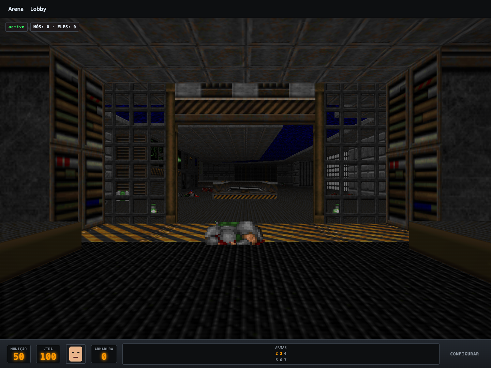

Phobos Deathmatch — 90s Multiplayer Arena on Pronto
A 90s first-person deathmatch arena set on the UAC Phobos base: enter your callsign, drop into a 3D raycast/Babylon corridor arena with bots or live players, pick up shotguns and armor shards, and race to the frag limit with a classic status-bar HUD. Latest product brief ↓
The arena reaches the edge
Before this turn, Doom declared no release target. Its vendored game modules prevented a single-file Pages build, while the Cloudflare builder required a database. The static Worker path now serves the same addressed game assets without introducing an unused database.

Actual local release in Chromium, after starting a match. The scene contains 734 meshes and reports no page errors.
The release work exposed a missing renderer dependency and Trusted Types and viewport issues. Babylon is now pinned and local, with a documented compatibility adaptation for the terminal's SES environment. The integration and post-release verification journeys start the real game and check that the active scene renders.
Doom Arena — 90s Deathmatch on Phobos
Step into the UAC Phobos installation. Grab a shotgun, pick up armor, strafe around corners, and frag opponents in high-speed arena combat. The game runs identically in an offline browser tab against simulated bots or connected over WebTransport to edge arena shards.
Data
Match — one match session: map name, frag limit, time limit, elapsed ticks, current phase (warmup, active, over), and winner handle.
Player — one marine in the arena: handle, shirt color, health (0–100), armor (0–100), active weapon, ammo inventory, score (frags), and ping.
Frag — a registered kill event: match id, killer id, victim id, weapon used, and tick timestamp.
Item — an arena pickup entity: type (health, armor, ammo, shotgun, chaingun, rocket), position (x, y, z), and respawn cooldown ticks.
Tick — the monotonic 35Hz simulation step counter.
Screens
The Arena (/) — Hardware-accelerated 3D world rendering the e1m1.gltf facility with dynamic sector lighting, billboard sprite actors, top-right frag feed, bottom status HUD (ammo, health, Doomguy face mugshot, armor, arms matrix), and match intermission overlay.
The Lobby (/lobby) — Pre-match staging screen with player handle input, marine armor tint selector, frag limit, and time limit options.